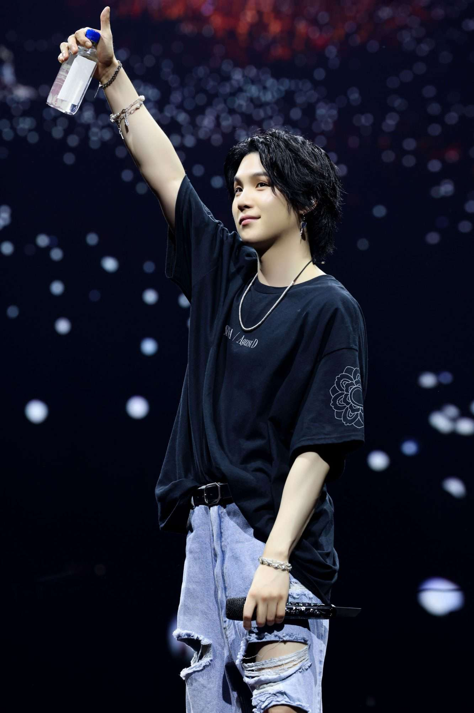
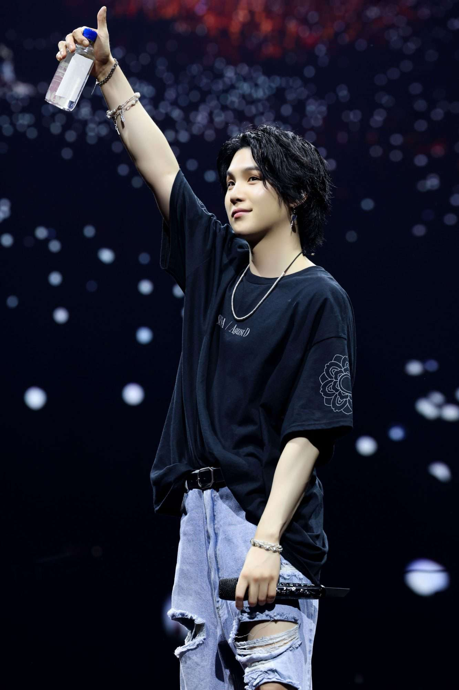

Min Yoon-gi민윤기
BIOGRAFIA
Min Yoon-Gi nació el 9 de marzo de 1993 en la ciudad de Daegu, al sureste de Corea del Sur.6 Empezó a interesarse por la música en quinto de primaria después de ver una actuación de Stony Skunk en televisión, y fue así como empezó a escuchar a grupos hip-hop como Epik High.7 En segundo curso de la escuela media actuó por primera vez en un escenario interpretando el tema «Go Back» del grupo Dynamic Duo. A los trece años comenzó a aprender a utilizar la tecnología MIDI y a escribir sus propias canciones.8 A los diecisiete años y gracias a un mentor, entró a formar parte de un grupo de rap underground llamado D-Town.67 Mientras formaba parte de esta agrupación produjo la canción «518-062», que es un tema conmemorativo a la Masacre de Gwangju.9 En una entrevista con la revista Grazia declaró: «Cuando trabajaba en el estudio, componía canciones o hacía ritmos e incluso los vendía. Después empecé a rapear y a hacer actuaciones de forma natural. Mientras trabajaba allí era difícil pagar la comida o el transporte. (...) Pero aunque era difícil quería hacer música, así que lo soportaba».6
CARRERA
Suga entrenó bajo Big Hit Entertainment por tres años junto a sus compañeros RM y J-Hope.11 A pesar de haber entrado en Big Hit como compositor, el 13 de junio de 2013 debutó con el grupo BTS como rapero con el sencillo «No More Dream» de su primer álbum debut, 2 Cool 4 Skool.72 Suga confesó que su hermano mayor había jugado un papel importante en su carrera en la música al ser el único miembro de su familia que le había apoyado cuando decidió presentarse a la audición de Big Hit.7 Llegó a escribir el tema «Never Mind» incluido en el álbum The Most Beautiful Moment in Life, Part 2 sobre el desprecio de su familia hacia su deseo de convertirse en músico.12 El seudónimo Agust D viene de «DT Suga» a la inversa, el nombre que utilizaba cuando comenzó a escribir letras, donde «DT» significa «Daegu Town».6
 
